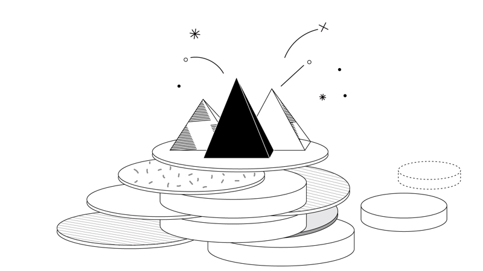

Hello! :)
얌밍이의
첫 '웹 페이지 만들기' ~ ~
INDEX
- SNOWBOARD
- FROZEN
- PROGRAMMING
-----------------------------------------------------
PROGRAMMING
HTML!
2020년 8월 31일부터 공부하기 시작했다.
생각보다 진짜 너무 재밌다!
이 페이지를 만들고 있는 현재 시각
2020년 9월 1일 오전 7시 27분

컴퓨팅 기초 교양 공부가 너어어어어무 하기 싫다고
시험지를 백지로 냈던 나였는데
(정말 레전드 껄껄)
대체 어쩌다가 시작하게 된 프로그래밍인진 나 역시 모르겠지만 ㅋㅋ
프로그래밍을 공부한지 어느덧 1년 반이 되어간다!
전공생이 아니었기에
이곳에 투자하는 시간도, 정보량도
많지는 않았지만
돌이켜보니
이것 저것 꽤 많이 깔짝여봤다! ㅋㅋㅋㅋ
말 그대로 깔짝이다. ㅎㅎ
그러던 어느날 문뜩 이런 생각이 들었다.
"프로그래밍, 배웠어. 그런데 대체 이걸 어따 써먹는다는거지?"
프로그래밍 공부를 하면 할수록 이런 궁금증은 더욱 커져만 갔다.
그렇게 알게 된 것이 바로 웹 이었다.
웹 공부를 해보고 싶다는 마음이 들어
연출부를 핑계삼아
컴공 친구 영시랑 같이 웹 공부를 '시도'해보고 있다! ㅋㅋㅋ
지금 이 html 공부가 끝나면 django 공부를 해볼거다 ,,!
영시 & 얌밍 화이팅 ~,~
내가 지금 공부하고 있는 링크 바로가기